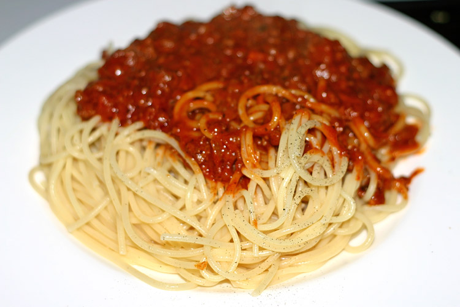

Spaghetti With Meat Sauce

Dish Description
The classic staple italian dish, made easier than ever. This recipe will show you how to make your
own homemade sauce and combine it to make a simple staple dish that anyone can make in less than
30 minutes.
Ingredients
- 1 pound spaghetti
- 2 pounds lean ground beef
- 1 onion, minced
- 1(6 ounce) can tomato paste
- 2(10.75 ounce) cans condensed tomato soup
- 2 1/2 cups water
Cooking Steps
- Step 1: Bring pot of lightly salted water to a boil. Add pasta and cook until al dente. Drain.
- Step 2: In a large skillet over medium heat, cook ground beef with onion until meat is brown. Drain.
Return meat mixture to pan with tomato paste, tomato soup, and water. Cook, stirring frequently, until
heated through and thickened.
- Step 3: Serve meat sauce over cooled spaghetti. Enjoy!